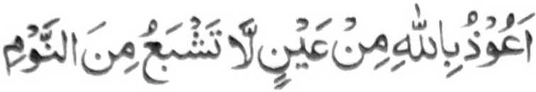

Miyapanothol makapantag ko Hassan (Radhiallaho 'Anho) a igira si-i magabedas, na pephamansi so paras iyan. Kagiya aden a miza-on o inoto na pitharo iyan, "Masa imanto a kathindeg sa Hadapan o (Allah) a Maporo ago Mameges a Dato.'' Si-i ko kira-ot iyan ko pinto-an o Masjid na gi-i niyan tharo-on "Ya Allah! So oripen Ka na kati-i sangka-iya paitao ngKa, Hay Lebi a Masalinggagao! Kati-i so baradosa a maa-adap Ka niyan. lnipaliyogat ka ko manga pipiya rekami so kadapaya iran ko manga karata-an o manga rarata rekami. Ya Allah! Seka so Mapiya ago saken so marata. Sabap ko langon o makalelebi a mapiya si-i Reka, na dapaya ngKa raken so langon o karata aken Hay, Lebi a Makalimo-on!" Oriyan niyan na somoled sekaniyan sa Masjid.
So Zain-ul-Abideen (Rahmatullahi ’Alaihi) na aya betad iyan na gi-i maksazambayang sa sanggibo ka raka'at a Sunnat oman gawi-i. Daden makalepas sa Tahajjud, melagid o zi-i sa lakawan o di na zi-i sa walay. So paras iyan na pephamansi igira gi-i magabedas ago pethabaden igira tomitindeg ko Sambayang Aden a miniza-on o anda oto sabap. Pitharo iyan, "Katawan ka o Antawa-a angkaya pagadapen aken?" Miyaka-isa na gi-i sekaniyan Zambayang, na miyatotong so sapasagi ko walay niyan. Itataros iyan den so Sambayang iyan sa mananay. Kagiya i-iza-on inoto, na pitharo iyan, "So apoy ko Jahannam na kiyapakilipatan niyan raken so apoy ko donya." Miyaka-isa na pitharo iyan, "So kapephangandag o takabor a tao na ipephamemesa ko. Kaga-i-ga-i na sathak sekaniyan a marezik a ig na mapita na bangkay sekaniyan, ogaid na tanto pen a gi-i mangandag." Lalayon niyan gi-i matharo, "Tanto a piyakamemesa a so manga tao na pananamaran niran so donya a di tatap, na da-a penggalebeken niran pantag ko Akhirat a ron siran khatatap." Lalayon niyan pethabangan so manga miskin si-i ko manga liliboteng a gagawi-i, ka aniran di khatokawi o antawa-a i miyogop kiran. Ayabo a kiyatokawi ron na oriyan o kiyapatay niyan a di maminos so magatos a pamiliya a pethabangan niyan.
Miyapanothol pantag ko Ali (Radhiallaho ’Anho) a gi-i magalin-alin so bontal iyan ago pethabaden igira miyariser so wakto o Sambayang. So kini-iza-an non o isa a tao na pitharo iyan, "Giya-i so masa a kithomanen aken ko sarig a da pangerawa o langit ago so lopa na apiya so manga palao na inikalek iran o ba iran awidi. Di aken katawan o mitoman aken."
Miyapanothol pantag ko Abdullah bin Abbas (Radhiallaho 'Anho) a igira miyaneg iyan so bang na pephakaora-ok sekaniyan taman sa so mosala niyan na pekhabasa o manga lo' iyan, ago pheleletawan a manga ogat ago pephakanga so manga mata niyan. Aden a tao a pitharo iyan non, "Da a pekha-ilay ami ko Bang a patot a ikalek ka." Pitharo iyan, "O so manga tao na zabota iran so gi-i pananawag o Muazzin (Page'barg) si-i kiran, na mikayas so torog iran ago awa-an niran so kapaparo a ginawa iran."
Inosay niyan kiran so manga tapa-os a pherinayagen o omani sataga a katharo si-i ko bang.
Aden a tao a piyanothol iyan, "Miyaka-isa na mizambayang ako sa 'Asr a ped aken so Zunnon Misri (Rahmatullahi 'Alaihi). Kagiya tharo-on niyan so 'Allah' (si-i ko Takbir), na tanto sekaniyan a tiyabad sa kalek sabap ko Kala o Allah, sa lagid den o ba peliyo so niyawa niyan, na kagiya tharo-on niyan peman so "Akbar” na miyagedam aken a so poso aken na pembeto sa kalek aken ko Allah.
So Owais Qami (Rahmatullahi ’AlaIhi), na kababantogan a auliya ago maporo sekaniyan ko manga Tabi-i, na aya ola-ola niyan na mababasa gawi-i na romoroko odi na somosodod.
So Asam (Rahmatullahi 'Alaihi) na miyakaisa na iniza-an niyan so Hatim Zahid Balkhi (Rahmatullahi 'Alaihi) o anda manaya i kipethindegen niyan ko Sambayang. Pitharo iyan: "Anda-i kapakarani o wakto o Sambayang, na magabedas ako phiya-piya na oriyan niyan na somong ako ko darepa a pezambayangan aken. Anda den i kapho-on aken zambayang na, pipikiren aken a so kasasangoran aken na giya Ka'aba, na so mbala a a-i aken na midadapo aken ko Sirat, na so Sorga na zisi-i ko kawanan aken, go so Naraka na zisi-i ko diwang aken, go so Malakal Maut na zisi-i ko poro-a olo aken, ago pipikiren aken a giyoto i mori-pori a Sambayang aken, sa oriyan noto na diyako den makapezambayang. So Allah i lebi a mata-o o ba aden pen a pekhatago ko poso aken sa maoto. Oriyan niyan na tharo-on aken so Allaho Akbar sa tarotop a kapangalimbaba-an ago batiya-an aken so Qur'an, a pephamimikiranen aken so ma-ana niyan. Romoko ako sa somodod ako na tarotop a kathapapay ago kasangkop, na taman sa mapasad aken so Sambayang aken sa mainay, a mai-inam aken a oba bo tharima-a o Allah sabap ko limo Iyan, go sarta a ika-alek aken o ba baden di tarima-a amay ko si-I pagilaya ko okit a kininggolalanen ko ron." So Asam na pitharo iyan, "Ay kiyathay a gi-l ngka kanggola-ola-a sa lagidanan a Sambayang?' So Hatim (Rahmatullahi ’AIaihi) na inisembag iyan, "Si-i ko soled o miya-ipos a telo-poIo ragon." Miyakagora-ok so Asam (Rahmatullahi ’Alaihi) a pitharo iyan, "Da ko den makaparoli sa mala a ontong o ba ko makazambayang sa lagidanan sa miyaka-isa bo."
Miyapanothol a so Hatim (Rahmatullahi 'Alaihi) na miyaka-isa na miyakalepas sa Sambayang a barabarajoma na tanto niyan a inikharata-a ginawa. Aden a manga tao a pephamitowa-an niran sangkoto a minibagak iyan. Baden sekaniyan miyaka-gora-ok sa pitharo iyan, "Miyatay so isa a wata aken a mama, na so sabagi ko manga tao sa Balkh na somiyong raken ka pherina-rinawan ako iran, oga-id na so kiyalepas ako ko Barajoma na sekano bo a da mapiraka tao i miyaka-oma a pherina-rinao raken. Aya den a sabapa-i na so manga tao na tanto kiran a makhap so boko sa Akhirat a di so boko sa donya."
So Said-bin-Almusayyab (Rahmatullahi ’Alaihi) na pitharo iyan, "Si-i ko soled o dowa-polo ragon, na dako den mada' sa Masjid ko masa a kapagebangi ron."
So Muhammad bin Wase (Rahmatullahi ’Alaihi) na pitharo iyan, "Pekhababaya-an ko so telo si-i ko kapaginetao aken: so ginawa-i a pekhatapa-osan ako niyan igira miyaribat ako; so roti a kiyatatangka-an ko kailangan aken; ago so Sambayang a barabarajoma ka aden madapay o Allah so di ron khatarotopan ago anako makaparoli sa balas sabap ko mapiya a madadalemon."
So Abu Ubaidah bin Jarrah (Radhiallaho ’Anho) na miyaka-isa na magi-imam sa Sambayang. Kagiya makapasad siran, na pitharo iyan ko madakel a tao, "So Shaitan na tanto ako niyan a giyarobat ko kapagi-imam aken. Piyakipikir iyan raken a miyaka-pagimam ako sabap sa saken i makalelebi rekano langon. Sabap ro-o na diyako den magimam pharoman."
Miyaka-isa na so Maimoon-bin-Mehran (Rahmatullahi ’Alaihi) na minira-ot sa Masjid a so Barajoma na miyapasad. Pitharo iyan, "Inna Lillahi Wa Inna Ilaihi Rajioon" go pitharo iyan, "So balas o Sambayang a barabarajoma na tomo-on aken a di so kadato sa Iraq."
Miyapanothol a so manga Sahabah na gi-i siran mboko sa telo gawi-i igira miyasalak a da iran ra-ota so paganay a Takbir ago pito gawi-i igira aya minibagak iran na so Barajoma.
So Bakr bin Abdullah na miyaka-isa na pitharo iyan, "Khapakay a imbitiyara-i ngka so Kadenan ago Dato o ka apiya antona-a masa." "Antona-a okit?" Ini-iza o sakatao a mama Pitharo iyan, "Pagabedas ka phiya-piya na tindegen ka so Sambayang."
So Aisha (Radhiallaho ‘Anha) na pitharo iyan, "So Nabi (Sallallaho 'Alaihi Wasallam) na igira zisi-i rekami (a manga pamiliya niyan) na gi-i rekami makimbitiyara-i ago pephamamakineg (kami niyan), ogaid na anda den i kariser o wakto o Sambayang, na aya pekha-ola-ola niyan na lagid o daden a katawan niyan rekami sa aya bo a katawan niyan na so Allah."
Miyatharo a so Said Tanoki (Rahmatullahi 'Alaihi) a si-i ko tenday a gi-i niyan kazambayang, na moran den so lo' pho-on ko manga mata niyan.
Aden a miniza ko Khalaf-bin-Ayub (Rahmatullahi 'Alaihi), "Baka di khasamok o rengit ko Sambayang ka?" Aya sembag iyan na, "Apiya so pithamanan a marata-i ola-ola a manosiya si-i ko kaphaginged na pekhatiger iyan so gi-i ron kambadaka o polis ago si-i ko kapasad iyan na gi-i niyan pen imbantogan a kiyatigera niyan non. Andamanaya i kakhasamoka raken o rengit, si-i ko masa a katitindeg aken sa hadapan o Kadnan ko?"
Miya-aloy ko 'Bahjatun-nufus' a so isa ko manga Sahabah na si-i ko gi-i niyan kazambayang na piyanekhao so koda iyan. Miya-ilay niyan noto ogaid na da niyan potola so Sambayang. Aden a miniza-on, "lno ngka da potola so gi-i ngka kazambayang ka aneka madakep angkoto a tekhao?" lnisembag iyan, "Matetembang ako ko galebek a lebi a mala-i arga a di so koda."
Miyapanothol a so Ali (Radhiallaho 'Anho) a igira aden a miyasogat ko lawas iyan a pana (si-i sa kathidawa), na aya kapekhabadot iyan non na igira gi-i-zambayang. Miyaka isa na miyapana sekaniyan sa bobon. Diyon khabadot apiya si-i ko oriyan o miyakapira iran katepengi, sabap ko kinitaralo o masakit a pekhagedam iyan. Kagiya zambayang sekaniyan sa Sunnat na so kiya sodod iyan na biyadoton o manga tao so pana sa tanto siran a kiyaregenan. So kiyapakapasad iyan zambayang na iniza-an niyan so lomilibeton a manga tao, "Bakano mithimo ka aniyo ron mabadot so gasa a pana?' Kagiya tharo-on niran a miyabadot iran den, na pitharo iyan kiran a daden a miyagedam iyan a masakit si-i ko kiyabadota iran non.
So Muslim bin Yasir na igira tominideg ko Sambayang na gi-i niyan tharo-on ko manga pamiliya niyan, "Di kano den gi-i mbibitiyara-i ka di aken den khaneg so gi-i niyo tharo-on."
Miyapanothol makapantag ko Amir bin Abdullah (Rahmatullahi 'Alaihi) a di niyan khaneg apiya so kapephopoka ko tambor si-i ko masa a gi-i zambayang, kena ba so bo so gi-i katharo o manga tao a lomilibeton. Aden a tao a miniza-on, "Ba aden a mai-inengka a ka si-i ko gi-i ngka kazambayang?' Inisembag iyan, "Oway! Mai-inengka aken a aden a gawi-i a phakatindeg ako sa hadapan o Allah, a o di ako pakasonga sa Sorga na si-i ko Naraka." Giyangkoto a mama (a miniza) na pitharo iyan, "Kena ba giyanan i mapipikir aken. Ba ngka di katawi so di ami gi-i tharo-on a lomolibet reka?" Pitharo iyan, "Tomo-on aken a ba ko den mabazag a bangkao a ba aden pen a mamengka aken a gi-i tharo ko masa a gi-i ako zambayang." Lalayon niyan gi-i matharo, "So paratiyaya ko ko khaola-ola sa Akhirat na tanto a miyatarotop taman sa daden pen a ba-on khi-oman apiya ba den mailay o mbala a mata ko."
Aden a barasimba a iniza-an, "Ba aden pen a kapekhapikira ngka ko donya si-i ko masa a gi-i ka zambayang?" lnisembag iyan, "Di aken den khapikr so donya melagid o gi-i ako zambayang o di na kena ba ko gi-i zam-bayang." Aden pen a isa a lagid iyan a iniza-an, "Ba aden pen a pekhapikir ka a salakao igira gi-i ka zambayang?" Inisembag iyan, "lno ba aden pen a lebi a phakabarayat a di so Sambayang a kapipikira on?"
Si-i ko 'Bahjatun Nufus' na minisoraton a sakatao a Shaikh a aya mao-ola ola niyan na lalayon sekaniyan gi-i zam-bayang sa Paralo o di na Sunnat o di na gi-i n Zikr a daden a dekha, pho-on ko wakto a Zuhur taman ko wakto a Fajr ko zambi a gawi-i. Oriyan o Fajr, na si-i ko kipetharosen niyan ko Zikr iyan na o phakagedam sa toratod, na nggaga-an mag-Istighfar ago tharo-on niyan angka-iya a pangeni:

"Melindong ako ko Allah pho-on ko mata a di khaosog makatorog."
Miyapanothol makapantag ko isa a Shaikh a somong sekaniyan sa iga-an na makatorog. Ogaid na o di sekaniyan toroga, na mbowat sekaniyan na manambayang sa gi-i niyan tharo-on, 'Ya Allah! Katawan ka sa tarotop a sabap ko kalek aken ko apoy ko Naraka na miyada so toratod aken."
Madakel a manga tothol makapantag ko manga barasimba a manga tao a pinggasto iran so manga kagagawi-i ran sa panagontaman ago babaya ko Allah a di tano magaga maloy langon si-i ko satiman a kitab. Aya kamata-ani ron na miyada so babaya tano ko kapiya o lagidaya a panagontaman sa mizangka so manga poso tano ko kabebenar angka-iya miyanga-aaloy. Ogaid na giyangka-i na oman-oman mapanothol ago tatap a diron kapanothola sa opama mbarama-ana so pamikiran tano ron na taralebi a zangka mambo so manga poso tano ko totholan o miyanga-oona a masa; sabap sa so lalayon ago tatap a gi-i kapanothola ko miyanggola-ola na isa oto a tanda sa kabebenar iyan a da-a sangka-an non.
Ped pen na pekha-ilay o mbala a mata tano a aden a manga tao a pinggasto iran so mababasa gawi-i (pekhasalak pen a makatitindeg) ko gi-i niyan kambantay sa sini. Di siran ndokawan odi na thoratoden. Opama ka so galebek a kena ba simba a lagidanan, na khababaya-an a tao, na anda manaya i kiyapakazangka tano a so kanggalebek sa simba na di mambo khababaya-an a tao, a so osto na so manga tao a penggalebekon na pembegan o Allah sa liyo-liyowan a bager. ago kasabar? Aya bo a sabap o sangka-an a atay tano na sabap ko kada-a meleng, a lagido o kangoda-an a wata ko (kapekha-ilaya niyan) ko (galebek o) manga tao a kiyabaligan